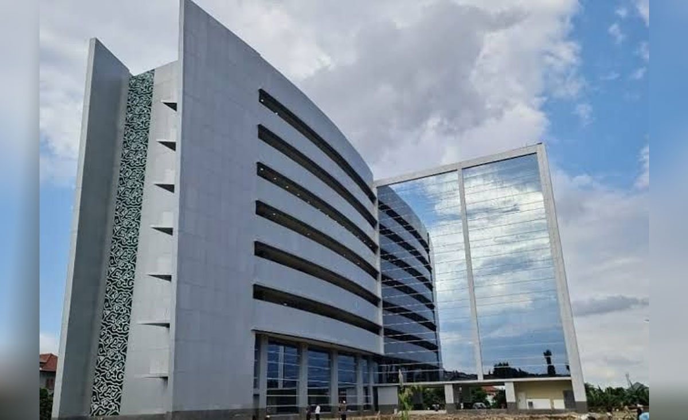

Sistem Informasi Manajemen Sarpras Kampus
SIMPEL UINSSC: Geofencing GIS & SLA
Digitalisasi Pelaporan Fasilitas, Validasi Presisi 5 Zona, dan Alur Perbaikan Berbasis SLA
Deskripsi Proyek
SIMPEL UINSSC adalah portal terpadu berbasis *Progressive Web Application* (PWA) untuk mendigitalkan seluruh siklus pemeliharaan sarana dan prasarana kampus. Menggabungkan sensor GPS spasial, filter anti-spam cerdas, dan transparansi tiket perbaikan.
Kawasan Kampus

Mencakup 5 zona geofencing GIS: Gedung Cyber, Pascasarjana & Mahad, Fakultas Syariah, Fakultas Dakwah, dan Kampus Utama.
Dampak & Manfaat
- Integritas Data: Zero-tolerance laporan fiktif di luar kampus.
- Efisiensi SLA: Disposisi penugasan teknisi otomatis dan terarah.
- Akuntabilitas: Bukti tiket cetak 1 lembar A4 dengan verifikasi QR Code.
Panduan Penggunaan Sistem
Alur terstandarisasi bagi Civitas Akademika (Mahasiswa, Dosen, Tenaga Kependidikan) dari pelaporan hingga tuntas:
Akses & Autentikasi Kampus
Masuk menggunakan akun resmi (SSO). Dilengkapi verifikasi kode CAPTCHA dinamis untuk memastikan keamanan dari serangan bot otomatis.
Input Laporan & Validasi GIS
Pilih kategori kerusakan, ketik deskripsi ruangan, lampirkan bukti foto fisik, dan verifikasi titik koordinat GPS pada peta geofencing 5 zona.
Disposisi & Penanganan Teknisi
Admin Sarpras memvalidasi tiket masuk, menetapkan teknisi spesialis (HVAC, Listrik, Sarpras Fisik), serta menentukan target batas waktu penanganan (SLA).
Tracking & Bukti Tiket PDF
Pantau progres penanganan secara *real-time*. Pelapor dapat langsung mengunduh/mencetak dokumen bukti resmi 1 halaman ber-QR Code.
Detailing Fitur Utama
Geofencing GIS
Formula Haversine memvalidasi radius GPS secara real-time pada 5 kawasan kampus.
Anti-Spam
Mencegah duplikasi laporan serupa di ruangan yang sama secara cerdas.
Kuota Akun
Maksimal 3 tiket aktif per pengguna guna menjamin kapasitas beban tim teknisi.
PDF 1 Halaman
Format cetak A4 presisi tanpa halaman sisa lengkap dengan QR Code autentik.
Spesifikasi Arsitektur
| Arsitektur | PWA (Single Page App) |
| Frontend | HTML5, CSS3, Vanilla ES6+ |
| Peta GIS | Leaflet.js & OpenStreetMap |
| Keamanan | Canvas CAPTCHA & DOMPurify |
| Visual 3D | Three.js WebGL Campus Tour |
| Offline Sync | Service Worker V8.3 Cache |
Hasil Implementasi
Sistem telah berhasil diuji coba pada lingkungan civitas akademika UINSSC dan terbukti memangkas waktu birokrasi penanganan kerusakan sarpras dari 3 hari menjadi hitungan jam.